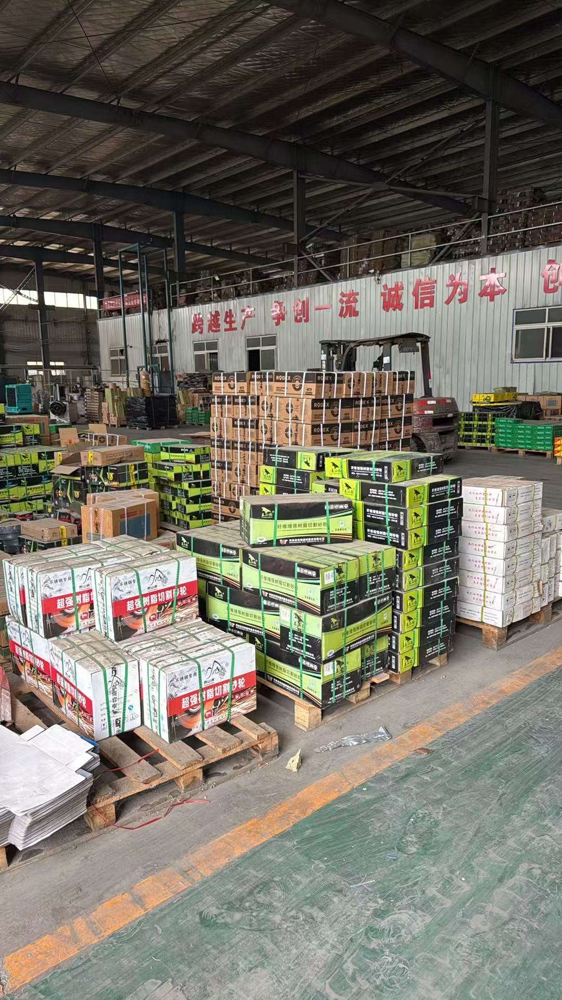
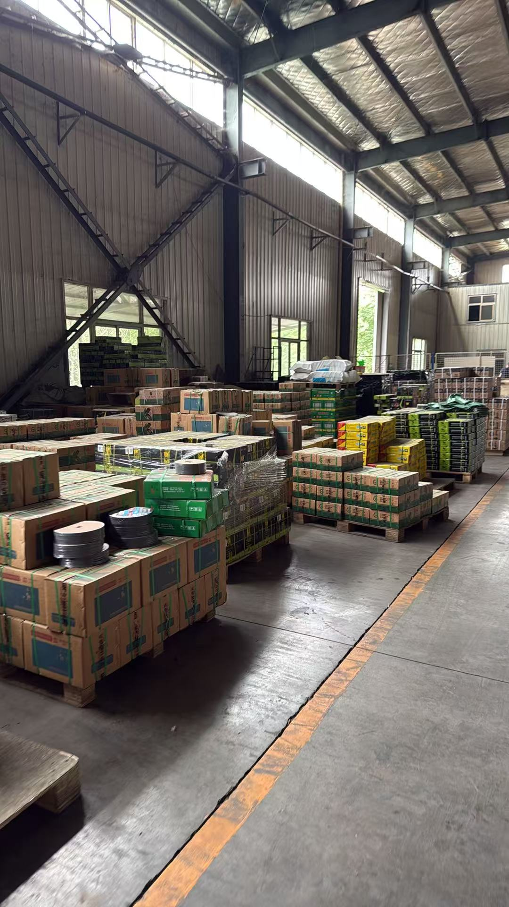
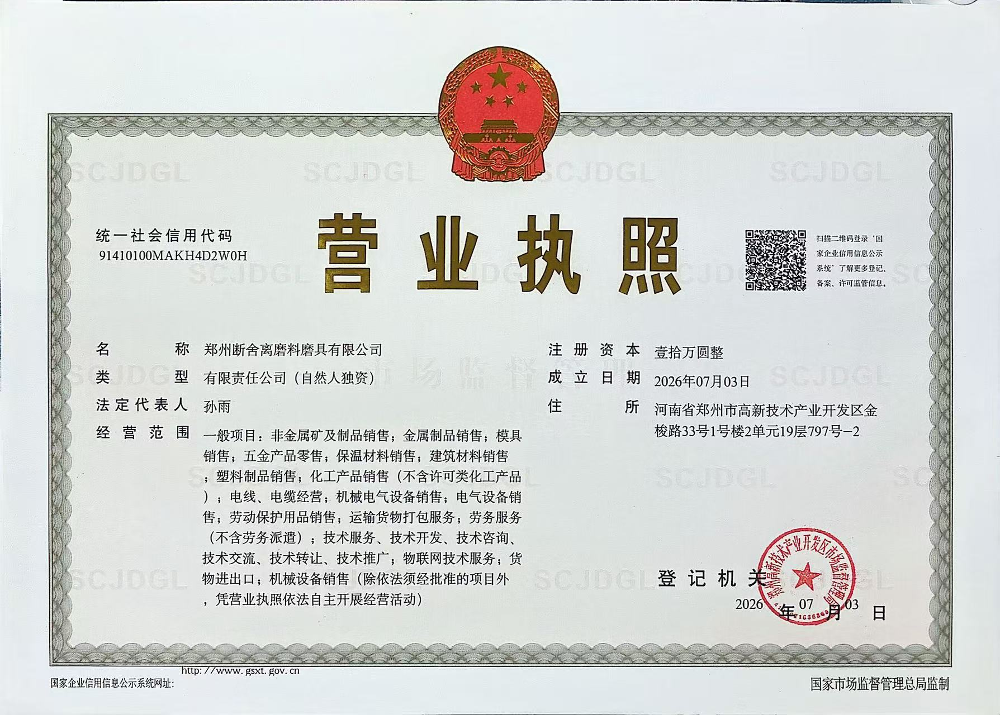

TERMINAL — PRODUCT DATA
Click any product to view details with vintage terminal
Quality abrasives from China to the world
Zhengzhou Minima-Tech Abrasives Co., Ltd. is a professional manufacturer and exporter of abrasive products, specializing in flap discs, cutting wheels, and grinding wheels. With years of experience, we serve customers across Southeast Asia and beyond.
Our factory is located in Wuzhi County, Jiaozuo, Henan, equipped with advanced production lines and strict quality control systems. We are committed to providing reliable, high-performance abrasives at competitive prices.
Office: Rm 797, Unit 2, Bldg 1, No.33 Jinsuo Rd, High-tech Zone, Zhengzhou, Henan, China
Factory: Wuzhi County, Jiaozuo, Henan, China
Business License



Watch our abrasive products in action